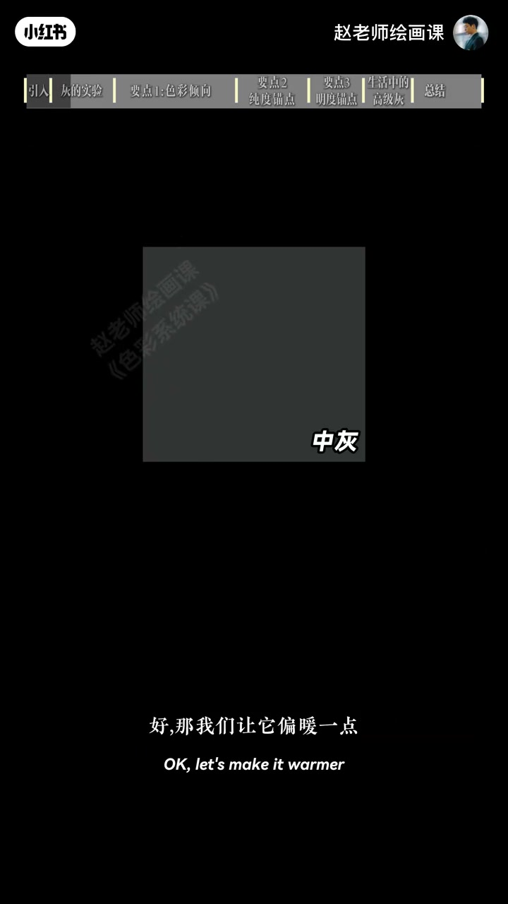
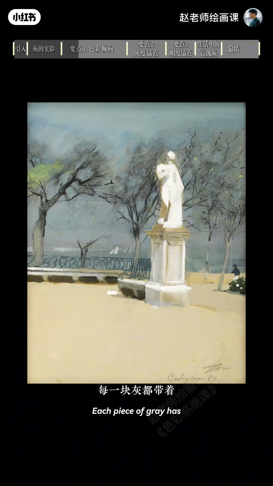
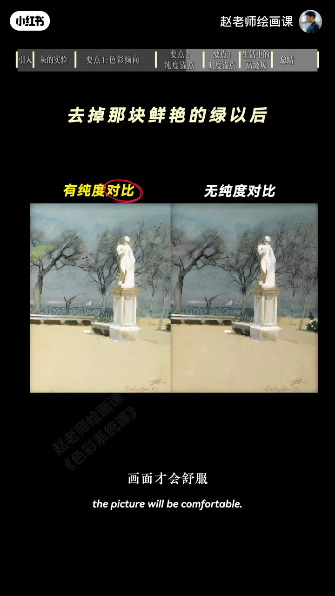

内容要点
你的灰死气沉沉，大师灰却通透，关键常在：没有倾向就没有情绪。中性灰闷；让它偏冷偏暖才有味道。风景里地暖灰、天蓝灰、树绿灰，每块灰带倾向才舒服。莫兰迪整体偏暖，墙黄、桌冷红、白瓶微粉绿红——统一中藏差异。灰色里还要有对比：去高纯会沉闷；黑白发眼或码头人也可当视觉锚点。生活里一身灰配亮色胸针同理。高级灰不是一种灰色，而是有倾向、有对比的色彩关系。
知识结构
中性灰闷；每块灰带色相。
统一有微差；灰里要锚点对比。
灰衣亮饰；高级灰＝关系。
高级灰靠色相倾向＋纯度/明度锚点对比，不是调一桶死中性灰。
00:00-00:44实验：没有倾向就没有情绪
为何你的灰死气，大师灰舒服通透？先做实验：标准中性灰有点闷；偏暖再偏冷，说不上哪个最好，但最上面无倾向那个肯定最不好看——没有倾向就没有情绪。
看画：地面暖灰、天空蓝灰、树泛绿灰，雕塑下蓝上黄，每块灰带明显色彩倾向，画面才通透。00:15／00:40。


00:44-01:45莫兰迪微差与对比锚点
莫兰迪不全是死灰：整体偏暖局部微妙——墙一点黄、桌带冷红、白瓶左到右发粉发绿发红，统一中藏差异才高级。绿太纯会否破坏？反过来去掉高纯，的确沉闷——灰色里一定要有对比。
没有鲜艳块也可：头发眼睛与黑白墙对比、码头人，作用与高纯一样，制造视觉锚点拉住视线；去掉马上脏闷。01:25。

01:45-02:31生活锚点与总结
生活同样：穿一身灰，配亮色胸针、腕表或发卡，这一点对比就是锚点。总结：高级灰其实不是一种灰色，而是有倾向、有对比的一种色彩关系。方法未说完，下集完整示范。
作业评论区；导流色彩系统课。02:00 灰衣亮饰。
完整转录（50段）
以下文本由 Whisper medium 模型自动转录，可能存在少量识别误差，已尽可能修正。
为什么你画的灰 总是死气沉沉
而大师的灰色 却总是舒服又通透
老规矩 我们先来做一个实验
这是一块标准的中性灰 好看吗
嗯 有点闷了
好 那我们让它偏暖一点 再偏冷一点
现在呢
嗯 说不上哪个最好
但最上面这个 肯定最不好看了
很好 这就是问题的关键
没有倾向 就没有情绪
你看这张画 地面是暖灰
天空的是蓝灰 树是泛绿的灰
雕塑下面是泛蓝 上面泛黄
每一块灰都带着明显的色彩倾向
所以画面才会通透舒服
嗯 那莫兰迪的画面 不全都是灰色吗
问得好 你仔细看啊
它的灰色整体偏暖 但局部又有微妙的变化
墙有一点黄 桌面带一点冷红
白瓶子从左到右 是发粉 发绿 发红
啊 这么微妙吗
对 统一中藏着差异
所以你才会觉得它高级
那刚才这幅画的绿色 是不是太纯了
会破坏高级灰呢
你的观察很敏锐 我们反过来试一下
诶 的确是沉闷了起来
因为啊 灰色里面一定要有对比 画面才会舒服
你再看这些画
如果没有这些高纯度颜色
那基本没法看了
那如果没有鲜艳色块 是不是就不算高级灰了呀
不一定 你看头发和眼睛的黑白墙对比
和高纯度颜色的作用 是完全一样的
他们制造视觉毛点 把视线拉住
你看码头上的人 就是这个道理
一旦去掉他们 马上就会变得脏 变闷
生活里也是一样
穿一身灰 配一个亮色的胸针 腕表 或者发卡
这点对比就是毛点
所以总结一下 高级灰呢 其实不是一种灰色
而是有倾向 有对比的一种色彩关系
那关于高级灰的方法还没有说完
下一集呢 我会画一张完整的示范 让我们继续来研究
老规矩 作业发在评论区
如果你想系统掌握所有色彩规律和原理
并真正应用到自己的画面
可以关注5月21号上线的色彩系统课
我们下节课再见